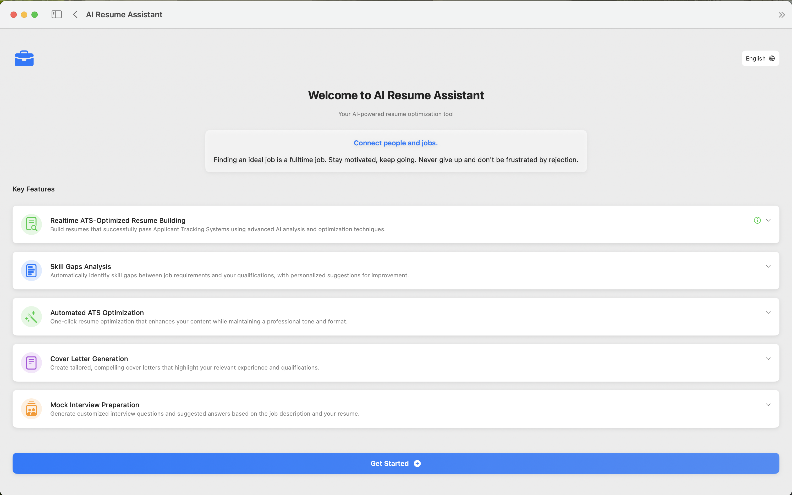

Job Hunting Using AI with Zero Cost for Dummies
About the Author: Experienced IT leader with a global background in enterprise technology, data architecture, and digital transformation. Proven ability to drive innovation, optimize IT operations, and align technology with business goals. Strong expertise in cloud computing, data management, and IT governance. Hiring experience includes leadership roles at IBM, Huawei, and OCBC Bank.
- Chapter 1: Introduction To Ai In Job Hunting
- Chapter 2: Crafting An Ai Powered Resume And Cover Letter
- Chapter 3: Finding Job Opportunities With Ai
- Chapter 4: Preparing For Interviews With Ai
- Chapter 5: Ai For Skill Development And Portfolio Building
- Chapter 6: Navigating A Multilingual Job Market With Ai
- Chapter 7: Advanced Ai Strategies And Future Trends
- Chapter 8: Troubleshooting And Best Practices
- Conclusion
AI Resume Assistant - Your Job Hunting Companion
We've developed a powerful macOS application to help you implement the strategies discussed in this book. AI Resume Assistant streamlines your job hunting process with cutting-edge AI technology.
Key Features:
- ATS-Optimized Resume Building: Create resumes that pass Applicant Tracking Systems effortlessly.
- Tailored Cover Letter Generation: Generate customized cover letters for each job application.
- Mock Interview Preparation: Practice with role-specific questions and receive AI feedback.
- Skills Gap Analysis: Identify missing skills and get suggestions for improvement.
Available on the Mac App Store:
Download AI Resume Assistant


Chapter 1: Introduction to AI in Job Hunting
What is AI and How Can It Help Your Job Search?
Artificial Intelligence (AI) might sound like something out of a science fiction movie, but it's already a part of our daily lives, and increasingly, a powerful ally in the job search process. At its core, AI refers to computer systems that can perform tasks that typically require human intelligence. These tasks include learning, problem-solving, pattern recognition, understanding language, and making decisions.
So, how does this translate to helping you find a job at zero cost?
- Efficiency: AI can automate and speed up many time-consuming aspects of job hunting. Think about sifting through hundreds of job postings or tailoring your resume for each application. AI tools can do this much faster than a human.
- Personalization: AI can help you identify jobs that are a truly good fit for your skills and experience, and assist in crafting application materials that resonate with specific employers.
- Insights: AI can analyze vast amounts of data to provide insights you might not easily find on your own, such as in-demand skills in your field, company culture clues, or even potential interview questions.
- Skill Enhancement: AI tools can help you practice for interviews, get feedback on your resume, and even suggest areas for skill development.
In essence, AI acts as your smart, tireless assistant, helping you work smarter, not just harder, in your job search.
The Zero-Cost AI Toolkit: Overview of Free Tools
The beauty of leveraging AI for your job hunt is that you don't need a hefty budget. Many incredibly powerful AI tools offer free versions or generous free tiers that are more than sufficient for individual job seekers. Throughout this book, we will delve into specific tools, but here's a general overview of the types of free AI resources you can expect to use:
- Large Language Models (LLMs) / AI Chatbots: Tools like ChatGPT (free version), Google Gemini (formerly Bard), Microsoft Copilot (integrated into Bing and other services), and Claude are invaluable for brainstorming, writing assistance (resumes, cover letters, emails), generating ideas, and even practicing interview questions. They understand and generate human-like text based on the prompts you give them.
- AI-Powered Resume Builders: Several online platforms offer free resume builders that use AI to help you format your resume, suggest keywords, and ensure it's ATS (Applicant Tracking System) friendly. Examples include Kickresume (free plan), Resume.com, and Canva (which has AI-assisted features).
- Job Aggregators with AI Features: Many job search websites (e.g., LinkedIn, Indeed, Google Jobs) use AI algorithms to match you with relevant job postings based on your profile, search history, and skills. They also offer AI-powered alerts.
- Grammar and Writing Assistants: Tools like Grammarly (free version) use AI to help you polish your written communication, ensuring your resume, cover letters, and emails are error-free and professional.
- AI-Powered Learning Platforms: Platforms like Coursera and edX often have free courses or audit options, some of which are AI-related or can help you develop in-demand skills identified through AI analysis.
- AI for Mock Interviews: Some platforms offer free mock interview practice, sometimes with AI-generated questions or basic feedback.
We will explore how to use these and other specific free tools in detail in the upcoming chapters.
Below is a framework illustrating the types of free AI tools available:

Setting Your Job Search Goals with AI
Before diving into using AI tools, it's crucial to have clear job search goals. AI can help you refine these goals, but it's most effective when it has a direction. Ask yourself:
- What kind_of role am I looking for?
- What industries am I interested in?
- What are my must-have criteria (salary, location, company culture)?
- What are my key skills and experiences I want to highlight?
Once you have a preliminary idea, you can use AI to:
- Research Roles and Industries: Use AI chatbots to ask about typical responsibilities, salary ranges (though always verify with other sources), and future outlook for specific roles or industries.
- Identify Skill Gaps: AI tools can analyze job descriptions for roles you're interested in and compare them to the skills listed on your resume, highlighting areas you might need to develop.
- Refine Your Target Company List: Use AI to research companies, their values, recent news, and employee reviews to see if they align with your preferences.
Example Prompt for an AI Chatbot (e.g., ChatGPT): "I am a marketing professional with 5 years of experience in digital marketing and content creation. I am looking for a remote senior marketing manager role in the tech industry, focusing on SaaS companies. Can you help me identify key skills currently in demand for such roles and suggest some questions I should ask myself to further refine my job search goals?"
Using AI to clarify your goals from the outset will make your subsequent use of AI tools much more targeted and effective.
Ethical Considerations and AI Biases
While AI offers tremendous benefits, it's important to be aware of ethical considerations and potential biases. AI systems are trained on data, and if that data reflects existing societal biases (e.g., gender, race, age), the AI can inadvertently perpetuate or even amplify them.
- Bias in Recruitment AI: Some companies use AI to screen resumes. If these tools are biased, they might unfairly filter out qualified candidates from certain demographic groups. While you, as a job seeker, have limited control over the AI used by employers, being aware of this possibility is important.
- Authenticity: When using AI to generate content for your resume or cover letter, ensure the final product genuinely reflects your skills and experiences. AI is a tool to assist, not to misrepresent.
- Data Privacy: Be mindful of the information you share with AI tools, especially free ones. Understand their data privacy policies. Avoid inputting highly sensitive personal information unless you are sure about the platform's security.
- Over-Reliance: Don't let AI replace your critical thinking. Always review and personalize AI-generated content. Your unique voice and experiences are what make you stand out.
How to Mitigate Risks:
- Use AI as an Assistant, Not a Replacement: AI should augment your efforts, not dictate them. Always apply your judgment.
- Diversify Your Tools and Information Sources: Don't rely on a single AI tool or source of information.
- Focus on Skills and Achievements: Ensure your application materials, even if AI-assisted, highlight your concrete skills and quantifiable achievements, which are less prone to subjective bias.
- Be Critical of AI Output: If an AI suggestion seems off, question it. If an AI tool consistently gives you results that seem skewed, consider using an alternative.
By being a mindful and critical user of AI, you can harness its power responsibly and ethically to enhance your job search.
Chapter 2: Crafting an AI-Powered Resume and Cover Letter
Overview:
flowchart TD A[Job Description] --> B[AI Keyword Extraction] B --> C[Resume Optimization] C --> D[ATS Screening] D --> E[Interview Invitation]The diagram above illustrates how AI can help optimize your resume for ATS and improve your chances of landing an interview.
Your resume and cover letter are often the first impression a potential employer has of you. In a competitive job market, making these documents stand out is crucial. AI can be an incredibly powerful assistant in this process, helping you create compelling, tailored, and optimized application materials – all without spending a dime.
Using AI for Keyword Optimization
Figure: ATS Keyword Matching
This figure shows the flow from your resume and job description into the ATS system.
Applicant Tracking Systems (ATS) are software applications that many companies use to filter and rank job applications. These systems scan resumes for specific keywords and phrases related to the job description. If your resume doesn't contain the right keywords, it might get overlooked, even if you're a perfect fit for the role.
How AI Helps:
- Identifying Keywords: AI chatbots (like ChatGPT, Gemini, Copilot) can analyze a job description you provide and extract the most important keywords and skills the employer is looking for.
- Comparing Your Resume: You can then ask the AI to compare these keywords against your current resume and suggest areas where you can incorporate them naturally.
- Suggesting Synonyms and Related Terms: AI can also suggest synonyms or related industry jargon that might be relevant, broadening your keyword reach.
Example Prompt for an AI Chatbot: "I'm applying for a 'Digital Marketing Specialist' role. Here's the job description: [Paste Job Description Here]. And here's my current resume: [Paste Your Resume Text Here, or a summary of relevant skills/experience]. Can you identify the key skills and keywords from the job description and suggest how I can better incorporate them into my resume? Also, suggest 5-7 synonyms or related terms I could use."
Best Practices:
- Natural Integration: Don't just stuff keywords into your resume. Weave them naturally into your experience descriptions, skills section, and summary.
- Context is Key: Ensure the keywords are used in a context that accurately reflects your abilities and experiences.
- Tailor for Each Job: Repeat this process for every job you apply for. Each role will have slightly different keyword requirements.
AI-Assisted Resume Builders and Templates (Free Options)
Comparison Table:
graph TD A[Kickresume] -->|Free Plan| B[Basic Templates] C[Resume.com] -->|Completely Free| D[Multiple Templates] E[Canva] -->|Magic Write AI| F[Design Templates] G[Word/Google Docs] -->|Templates + AI| H[Manual Edits]This chart compares free AI resume builder options.
Creating a visually appealing and well-structured resume can be challenging. Several free AI-assisted resume builders can simplify this process.
How AI Helps:
- Professional Templates: These tools often provide a variety of professionally designed templates that are ATS-friendly.
- Content Suggestions: Some AI resume builders offer suggestions for phrasing bullet points or writing a compelling professional summary based on the information you input.
- Formatting Assistance: AI can help ensure consistent formatting, proper sectioning, and an easy-to-read layout.
Examples of Free Tools (often with premium paid options, but good free tiers):
- Kickresume: Offers a free plan with limited templates and AI features for basic resume creation.
- Resume.com: A completely free resume builder with various templates and straightforward editing tools.
- Canva: While primarily a design tool, Canva has many resume templates and its "Magic Write" AI feature (available in the free version with limitations) can assist with text generation and refinement.
- Microsoft Word / Google Docs: Both offer resume templates. While not strictly AI builders, you can use them in conjunction with AI chatbots for content generation and then paste it into a template. Microsoft 365 Copilot (if you have access) or Google's Duet AI (if available in your Workspace account) can provide more direct AI assistance within these documents.
Best Practices:
- Choose ATS-Friendly Templates: Opt for clean, simple designs. Avoid overly complex graphics, tables, or fonts that might confuse an ATS.
- Proofread Carefully: Even with AI assistance, always meticulously proofread your resume for any errors or awkward phrasing.
- Focus on Content: While a good template is helpful, the content of your resume (your skills, experiences, and achievements) is what truly matters.
Writing Compelling Cover Letters with AI Prompts
Cover Letter Structure:
graph TD A[Opening Paragraph] --> B[Why You're Interested] B --> C[Key Skills/Experience] C --> D[Connection to Company] D --> E[Closing Statement]This diagram shows a typical AI-assisted cover letter structure.
A cover letter is your opportunity to tell a story, connect with the employer on a more personal level, and explain why you're passionate about the role and the company. AI can be a fantastic brainstorming partner and writing assistant for your cover letters.
How AI Helps:
- Generating an Outline: Provide an AI chatbot with the job description and key points from your resume, and ask it to generate a potential outline for your cover letter.
- Drafting Specific Sections: If you're stuck on the introduction, or how to phrase a particular achievement, AI can offer suggestions.
- Tailoring to the Company: Ask the AI to help you research the company's mission, values, and recent projects (you might need to provide some initial links or search terms). Then, ask it to suggest ways to weave this information into your cover letter to show genuine interest.
- Tone Adjustment: You can ask AI to help you adjust the tone of your cover letter (e.g., more formal, more enthusiastic).
Example Prompt for an AI Chatbot: "I'm applying for the 'Project Coordinator' position at [Company Name]. Here's the job description: [Paste Job Description]. I have 3 years of experience in project support and a strong background in [mention 1-2 key skills]. Can you help me draft an engaging opening paragraph for my cover letter that highlights my enthusiasm for [Company Name]'s work in [mention company's field/mission]? Also, suggest three key points I should emphasize in the body of the letter based on the job description and my skills."
Best Practices:
- Authenticity is Paramount: Your cover letter should reflect your genuine voice and personality. Use AI for inspiration and drafting, but always heavily edit and personalize the output.
- Show, Don't Just Tell: Instead of just saying you're a "team player," provide a brief example. AI can help you brainstorm these examples.
- Address it to a Specific Person: If possible, find the hiring manager's name and address the cover letter to them. AI might be able to help you find this information through targeted web searches (though always verify).
- Keep it Concise: Aim for three to four paragraphs. AI can help you be more succinct if your drafts are too long.
Tailoring Your Application for Each Role with AI Speed
Figure: Workflow Example
This figure illustrates the workflow of tailoring your application with AI.
One of the most time-consuming but critical aspects of job searching is tailoring your resume and cover letter for each specific role. Generic applications rarely impress. AI can significantly speed up this customization process.
How AI Helps:
- Rapid Analysis: AI can quickly analyze a new job description and compare it to your master resume/cover letter.
- Highlighting Key Differences: It can point out the specific skills or experiences that are most relevant to the new role, which you should emphasize.
- Suggesting Modifications: AI can suggest specific changes to your bullet points, summary, or cover letter paragraphs to better align with the new job requirements.
Workflow Example:
- Maintain a Master Resume: Have a comprehensive resume that includes all your experiences and skills.
- For Each New Application:
- Feed the new job description to an AI chatbot.
- Ask the AI to identify the top 5-7 requirements/keywords for this specific role.
- Provide your master resume (or relevant sections) and ask the AI to suggest modifications to highlight how your experience matches these top requirements.
- Do the same for your cover letter template.
- Review and Refine: Always carefully review and manually refine the AI's suggestions to ensure accuracy, natural language, and a personal touch.
By using AI as a smart assistant for tailoring, you can apply to more relevant jobs more efficiently, increasing your chances of landing an interview.
Chapter 3: Finding Job Opportunities with AI
Overview: AI-Powered Job Search Flow
flowchart TD A[Polished Resume & Cover Letter] --> B[AI-Driven Job Platforms] B --> C[Personalized Job Recommendations] C --> D[Smart Alerts & Notifications] D --> E[Networking & Hidden Market] E --> F[Job Applications]This diagram shows how AI tools guide you from a ready resume to discovering and applying for jobs through various smart channels.
Once your resume and cover letter are polished and AI-optimized, the next crucial step is actively finding job opportunities. AI can significantly enhance your ability to discover relevant roles, including those that might not be widely advertised. This chapter explores how to use free AI tools to supercharge your job search.
AI-Driven Job Search Engines and Platforms
Figure: AI Job Platform Recommendation
This figure illustrates how your profile feeds into AI-powered platforms to generate tailored job recommendations.
Most major job search platforms today incorporate AI to improve the matching process between job seekers and employers. Understanding how this AI works can help you use these platforms more effectively.
How AI Helps:
- Personalized Recommendations: Platforms like LinkedIn, Indeed, Google Jobs, and specialized industry job boards use AI algorithms to analyze your profile, search history, skills, and even your interactions (e.g., jobs you view or save) to recommend relevant positions.
- Semantic Search: Modern job search engines go beyond simple keyword matching. They use AI to understand the meaning and context of your search queries and job descriptions, leading to more accurate results.
- Skill Matching: AI can identify jobs that require skills you possess, even if the job titles are different from what you're searching for.
Examples of Platforms with Strong AI Features (Free to Use for Job Seekers):
- LinkedIn: Leverages AI extensively for job recommendations, suggesting connections, and even providing insights into how you match up against other applicants (with Premium, but basic matching is free).
- Indeed: Uses AI to personalize job feeds and email alerts based on your activity and resume.
- Google Jobs: Aggregates listings from across the web and uses AI to categorize and rank them, providing a comprehensive search experience.
- Niche Job Boards: Many industry-specific job boards also use AI to cater to specialized roles and skills.
Best Practices:
- Optimize Your Profile: Ensure your profiles on these platforms are complete, up-to-date, and rich with relevant keywords. This provides the AI with more data to make accurate recommendations.
- Be Specific in Your Searches: Use filters (location, experience level, industry) and precise search terms. Experiment with different keyword combinations.
- Engage with the Platform: Actively save jobs, follow companies, and indicate your job-seeking status. This signals to the AI what you're looking for.
- Review Recommendations Critically: While AI is powerful, it's not perfect. Always review recommended jobs to ensure they genuinely align with your goals.
Setting Up Smart Alerts and AI-Powered Recommendations
Smart Job Alert Workflow
flowchart LR A[Search Criteria] --> B[Save Search/Create Alert] B --> C[AI Monitors New Listings] C --> D[Job Alert Notification] D --> E[User Feedback] E --> CThis diagram shows how AI-powered job alerts are set up and refined over time.
Don't just passively search; let AI bring opportunities to you. Most job platforms allow you to set up job alerts.
How AI Helps:
- Automated Notifications: AI-powered alerts notify you via email or app notification when new jobs matching your criteria are posted.
- Learning from Your Feedback: Some systems allow you to provide feedback on the alerts (e.g., "this job is not relevant"), which helps the AI refine future recommendations.
- Proactive Suggestions: Beyond alerts for specific searches, AI can proactively suggest roles you might be interested in based on your broader profile and activity.
Steps to Set Up Effective Alerts:
- Perform a Detailed Search: On your preferred job platform, use specific keywords, titles, locations, and filters that accurately reflect your ideal job.
- Save the Search/Create Alert: Look for options like "Save Search," "Create Job Alert," or an email icon. Configure the alert frequency (daily, weekly).
- Refine Over Time: As you receive alerts, provide feedback if the platform allows. If the alerts are consistently off-target, adjust your search criteria and create new, more specific alerts.
Example Prompt for an AI Chatbot (to help define alert criteria): "I'm looking for entry-level remote software engineering roles in the US, preferably with companies working on sustainable technology. What keywords and search parameters should I use to set up effective job alerts on platforms like LinkedIn and Indeed?"
Networking with AI: Identifying Contacts and Insights
Figure: AI-Enhanced Networking
This figure shows how AI tools help you identify and connect with relevant professionals in your field.
Networking remains a vital part of job searching. AI can help you identify relevant contacts and gather insights to make your networking efforts more strategic.
How AI Helps:
- Identifying Alumni and Connections: LinkedIn's AI can help you find alumni from your university working at target companies or in roles you're interested in.
- Researching Individuals: Before reaching out to someone, you can use AI chatbots (with web browsing capabilities, if available and used cautiously for public information) or search engines to find publicly available information about their professional background, publications, or talks. This helps you personalize your outreach.
- Suggesting Conversation Starters: AI can help you brainstorm relevant questions to ask or topics to discuss during informational interviews based on a person's profile or company.
Example Prompt for an AI Chatbot: "I want to connect with someone working in product management at [Target Company Name]. I found [Person's Name] on LinkedIn, who is a Senior Product Manager there. Can you help me draft a concise and respectful connection request message for LinkedIn? Also, suggest two relevant questions I could ask them about their experience at [Target Company Name] if they accept my request."
Best Practices:
- Personalize Your Outreach: Generic connection requests are often ignored. Mention why you're specifically interested in connecting with them.
- Offer Value (If Possible): If you can share a relevant article or insight, it can make your outreach more compelling.
- Be Respectful of Their Time: If they agree to chat, be prepared and keep the conversation focused.
Uncovering the Hidden Job Market with AI Tools
Diagram: Hidden Job Market Exploration
flowchart TD A[Company Research] --> B[Identify Decision-Makers] B --> C[Proactive Outreach] C --> D[Hidden Opportunities] D --> E[Follow Up]This diagram illustrates how AI can help you access jobs that aren't publicly posted.
The "hidden job market" refers to jobs that are not publicly advertised. These might be roles filled through internal referrals, direct sourcing, or networking. AI can help you tap into this market.
How AI Helps:
- Company Research: Use AI to research companies you're interested in, even if they don't have current openings listed. Look for news about growth, new projects, or funding rounds, which might indicate future hiring needs.
- Identifying Decision-Makers: AI tools (especially within platforms like LinkedIn Sales Navigator, though free LinkedIn search can also be useful) can help identify potential hiring managers or team leads in departments you're targeting.
- Tracking Industry Trends: AI can help you stay updated on industry news and trends, which might reveal companies that are likely to be hiring soon.
Strategies:
- Proactive Outreach: Based on your research, consider sending a polite, well-crafted speculative application or networking email to a relevant contact at a target company, expressing your interest and highlighting your value proposition.
- Follow Companies and Influencers: Use AI-powered alerts on social media and job platforms to follow target companies and key influencers in your industry. They might share unadvertised opportunities or insights.
By strategically using AI-driven job search engines, setting up smart alerts, leveraging AI for networking, and exploring the hidden job market, you can cast a wider, more effective net in your job search.
Chapter 4: Preparing for Interviews with AI
Overview: AI Interview Preparation Flow
flowchart TD A[Resume & Job Description] --> B[AI Mock Interview] B --> C[Feedback & Iteration] C --> D[Company & Interviewer Research] D --> E[Personalized Questions] E --> F[Interview Day]This diagram shows how AI tools can guide you from preparation to interview day, emphasizing practice, research, and iteration.
Interviews are often the most nerve-wracking part of the job search. However, with strategic preparation, you can significantly boost your confidence and performance. AI offers a suite of free tools that can help you practice, research, and anticipate interview scenarios, giving you a competitive edge.
AI-Powered Mock Interview Platforms (Free Tiers)
Figure: AI Mock Interview Workflow
This figure illustrates the cycle of practicing with AI and receiving feedback to improve your interview skills.
Practice makes perfect, and AI can be your tireless mock interviewer. Several platforms offer free tiers that allow you to practice answering common interview questions and sometimes even receive basic feedback.
How AI Helps:
- Simulated Interview Experience: These platforms present you with common interview questions (behavioral, technical, situational) via text or sometimes even video/audio prompts.
- Question Variety: AI can generate a wide range of questions, ensuring you're prepared for different types of inquiries.
- Pacing and Fluency Practice: Simply articulating your answers out loud helps improve your delivery and confidence.
- Basic Feedback (in some tools): Some free tools might offer rudimentary feedback on things like speaking pace, use of filler words, or keyword density in your answers (though advanced feedback is usually a premium feature).
Examples of Free Tools/Approaches:
- AI Chatbots (ChatGPT, Gemini, Copilot): You can directly ask these chatbots to act as an interviewer. Provide them with the job description and your resume, and ask them to conduct a mock interview for that specific role. You can ask for behavioral questions, technical questions (if applicable), or situational questions.
- Prompt Example: "Act as an interviewer for a [Job Title] role. Here is the job description: [Paste JD]. Ask me 5 common behavioral interview questions, one at a time. After I answer each, provide brief feedback on clarity and relevance."
- Google Interview Warmup: A free tool from Google that lets you practice answering questions across various fields. It uses AI to transcribe your answers and provide insights on things like job-related terms you used, most-used words, and talking points you covered.
- Poised (Free Tier): While focused on general communication, Poised's free tier can offer some feedback on your speech patterns during practice sessions if you record yourself.
Best Practices:
- Treat it Seriously: Approach mock interviews as if they were real. Dress professionally (if it helps you get in the zone) and minimize distractions.
- Record Yourself (If Possible): If the platform doesn't record, use your phone or computer to record yourself. Watching yourself back can reveal areas for improvement in body language and delivery that AI might not catch.
- Focus on the STAR Method: For behavioral questions, practice structuring your answers using the STAR method (Situation, Task, Action, Result). You can ask AI to help you formulate STAR answers for common scenarios.
- Iterate: Don't just do one mock interview. Practice regularly, focusing on different types of questions and roles.
Researching Companies and Interviewers with AI
Diagram: Company & Interviewer Research Flow
flowchart LR A[Company Name] --> B[AI Chatbot] B --> C[Company Insights] B --> D[Interviewer Background] C --> E[Prepare Questions] D --> E E --> F[Interview]This diagram shows how AI can help you gather information about the company and interviewers to prepare thoughtful questions.
Going into an interview well-informed about the company and your interviewers shows genuine interest and preparedness. AI can streamline this research process.
How AI Helps:
- Company Insights: Use AI chatbots to quickly gather information about a company's mission, values, recent news, products/services, and competitors. Ask for summaries of their latest annual report or recent press releases.
- Interviewer Background: For publicly available information, you can use AI (often via web browsing plugins if available with your chatbot, or by guiding its search queries) to find your interviewers' LinkedIn profiles, publications, or professional achievements. This can help you understand their expertise and potentially find common ground.
- Industry Trends: AI can help you get up to speed on current trends and challenges in the company's industry, enabling you to ask more insightful questions.
Example Prompts for an AI Chatbot:
- "Tell me about [Company Name]'s company culture and recent major projects. What are their core values?"
- "I'm interviewing with [Interviewer's Name], a [Interviewer's Title] at [Company Name]. Can you help me find their LinkedIn profile and summarize their key areas of expertise based on publicly available information?"
- "What are the current key challenges and opportunities in the [Industry Name] sector that [Company Name] operates in?"
Best Practices:
- Verify Information: AI can sometimes hallucinate or provide outdated information. Always try to cross-reference key facts with the company's official website or reputable news sources.
- Use Information Ethically: The goal is to be informed and show genuine interest, not to appear like you've stalked your interviewers. Use the information to tailor your questions and conversation naturally.
- Prepare Your Own Questions: Based on your research, prepare thoughtful questions to ask the interviewer. This demonstrates engagement and curiosity.
Generating Potential Interview Questions and Answers
Figure: AI-Generated Q&A Preparation
This figure shows how you can use AI to generate and refine interview questions and answers.
While you can't predict every question, AI can help you anticipate many common and role-specific ones, and assist in drafting strong answers.
How AI Helps:
- Common Questions: AI can provide lists of frequently asked interview questions (e.g., "Tell me about yourself," "Why are you interested in this role?" "What are your strengths/weaknesses?").
- Role-Specific Questions: By providing the job description, AI can generate questions tailored to the specific skills and responsibilities of the role.
- Behavioral Question Scenarios: AI can create hypothetical scenarios for behavioral questions (e.g., "Tell me about a time you failed," "Describe a time you worked in a team").
- Drafting Answers: You can outline your experiences and ask AI to help you structure them into clear, concise answers, perhaps using the STAR method.
Example Prompts for an AI Chatbot:
- "I'm preparing for an interview for a [Job Title] role. Based on this job description [Paste JD], what are 10 likely technical questions I might be asked?"
- "Help me draft a STAR method answer for the behavioral question: 'Describe a challenging project you worked on and how you overcame the obstacles.' My experience was [briefly describe your experience]."
- "What are some insightful questions I can ask the interviewer at the end of the interview for a [Job Title] role at a [Type of Company, e.g., tech startup]?"
Best Practices:
- Personalize AI-Generated Answers: Never use AI-generated answers verbatim. They are a starting point. Infuse them with your own experiences, personality, and specific examples.
- Focus on Your Key Selling Points: Ensure your answers consistently highlight your most relevant skills and achievements.
- Practice, Don't Memorize: Understand the core message of your answers, but don't try to memorize them word-for-word, as this can sound robotic.
Analyzing Your Interview Performance with AI (Where Possible)
Diagram: Interview Performance Feedback Loop
flowchart TD A[Mock Interview] --> B[AI Feedback] B --> C[Self-Review] C --> D[Improvement] D --> AThis diagram illustrates the iterative process of practicing, receiving feedback, and improving your interview skills with AI assistance.
While comprehensive AI-driven interview analysis is often a premium feature, there are some ways to get basic feedback using free tools.
**How AI Can Assist (Limited Free Options):
- Transcription and Keyword Spotting: If you record your mock interviews, you can use free transcription services (some built into operating systems or available online with limits). Then, you can manually review the transcript or use text analysis tools (even a simple word cloud generator) to see if you're using relevant keywords and avoiding filler words.
- Speech-to-Text for Self-Correction: Tools like Google's Interview Warmup transcribe your speech, allowing you to review your answers for clarity and conciseness.
- Grammar and Clarity Check: Paste your transcribed answers into a tool like Grammarly (free version) to check for grammatical errors or awkward phrasing.
Best Practices:
- Seek Human Feedback Too: AI is helpful, but human feedback from mentors, peers, or career counselors is invaluable for nuances AI might miss.
- Focus on Improvement, Not Perfection: The goal is to identify areas for growth and continuously refine your interviewing skills.
By leveraging these free AI tools for interview preparation, you can approach your interviews with greater confidence, preparedness, and a clearer understanding of how to present your best self to potential employers.
Chapter 5: AI for Skill Development and Portfolio Building
Overview: AI Skill Development & Portfolio Flow
flowchart TD A[Identify Skill Gaps] --> B[Find AI Learning Resources] B --> C[Skill Practice & Projects] C --> D[Portfolio Creation] D --> E[Showcase to Employers]This diagram shows how AI can guide you from identifying skill gaps to building and showcasing a portfolio.
In today's rapidly evolving job market, continuous skill development is essential. AI can not only help you identify the skills you need but also point you towards free resources to acquire them. Furthermore, AI can assist in creating tangible portfolio pieces that showcase your abilities to potential employers.
Identifying Skill Gaps with AI
Figure: AI Skill Gap Analysis
This figure illustrates how AI compares your resume to job descriptions to identify skill gaps.
Before you can develop new skills, you need to know which ones are in demand and where your current skillset might be lacking. AI can be a valuable tool for this diagnostic process.
How AI Helps:
- Analyzing Job Descriptions: Provide AI chatbots with job descriptions for roles you aspire to. Ask the AI to extract the most frequently mentioned hard and soft skills.
- Comparing to Your Resume: You can then ask the AI to compare this list of in-demand skills against the skills currently listed on your resume. This will help pinpoint potential gaps.
- Industry Skill Trend Analysis: Ask AI about emerging skills in your target industry or role. For example, "What are the top 3 emerging technical skills for data analysts in 2024?"
- Personalized Skill Recommendations: Some advanced platforms (though often paid) offer personalized skill recommendations based on your career goals and current profile. However, you can simulate this by clearly defining your goals to a free AI chatbot and asking for skill suggestions.
Example Prompt for an AI Chatbot: "I am a customer service representative with 5 years of experience, looking to transition into a 'Customer Success Manager' role. Here are three job descriptions for CSM roles I'm interested in: [Paste JDs]. Can you analyze these and tell me the top 5 skills that appear consistently? Then, compare these to my current skills: [List your key skills, e.g., communication, problem-solving, CRM software (basic)]. What are the potential skill gaps I should focus on?"
Best Practices:
- Focus on Transferable Skills: Don't forget your soft skills (communication, teamwork, problem-solving). AI can help you identify how these are valued in your target roles.
- Validate AI Suggestions: While AI provides a good starting point, cross-reference its findings with industry reports, informational interviews, and your own research.
- Prioritize: You can't learn everything at once. Use the AI's analysis to prioritize which 1-2 skills to focus on developing first.
Free AI Learning Resources and Courses
Diagram: AI-Powered Learning Path
flowchart LR A[Skill Gap Identified] --> B[AI Suggests Resources] B --> C[Online Courses] B --> D[Practice Exercises] C --> E[Skill Mastery] D --> EThis diagram shows how AI can help you find and follow a personalized learning path.
Once you've identified skill gaps, AI can help you find free or low-cost resources to bridge them. Many online learning platforms leverage AI for personalized learning paths or course recommendations.
How AI Helps (Directly and Indirectly):
- Course Discovery: AI chatbots can suggest free courses or learning platforms based on the skills you want to acquire. For example, "Suggest free online courses for learning Python basics for data analysis."
- AI-Powered Learning Platforms: Platforms like Khan Academy (completely free) use AI to provide personalized learning experiences. Coursera, edX, and Udacity offer many courses with audit options (free access to course materials without certification) or free introductory modules. Some of these platforms use AI to recommend courses based on your interests and learning history.
- Content Curation: AI can help you find relevant articles, tutorials, and documentation online for self-study.
- Practice and Quizzing: You can ask AI chatbots to generate practice questions or quizzes on topics you're learning to test your understanding.
Examples of Free/Freemium Learning Resources (often discoverable via AI query):
- Coursera/edX (Audit Tracks): Access high-quality university courses for free (without certificate/graded assignments).
- Khan Academy: Excellent for foundational skills in math, science, computing, and more.
- freeCodeCamp: Interactive learning for web development, data science, and more.
- YouTube: A vast repository of free tutorials on almost any skill imaginable. Use specific search queries, potentially refined with AI help.
- Codecademy (Basic Tier): Offers free introductory courses in various programming languages.
- Duolingo (for languages): Uses AI to personalize language learning.
Best Practices:
- Set Realistic Goals: Learning a new skill takes time and effort. Break down your learning into manageable chunks.
- Be Consistent: Dedicate regular time to learning, even if it's just a few hours a week.
- Apply Your Learning: The best way to solidify a new skill is to use it. Look for small projects or exercises.
Chapter 5: AI for Skill Development and Portfolio Building
Using AI to Create Project Showcases or Portfolio Items
Figure: AI-Assisted Portfolio Creation
This figure shows how AI can help you turn skill practice into portfolio-ready projects.
A portfolio is a powerful way to demonstrate your skills to employers, especially if you're changing careers or lack extensive direct experience. AI can assist in brainstorming, developing, and even presenting portfolio projects.
How AI Helps:
- Project Idea Generation: If you're unsure what kind of project to create, describe your skills and target role to an AI chatbot and ask for project ideas. For example, "I'm learning Python for data analysis. Suggest a beginner-friendly portfolio project I could do using a publicly available dataset."
- Coding Assistance (for technical roles): AI coding assistants (like GitHub Copilot - has a free trial or is free for students/teachers, or free alternatives/features in IDEs) can help you write code, debug, and understand new programming concepts. AI chatbots can also explain code snippets or help troubleshoot.
- Content Creation (for non-technical roles): For roles in marketing, writing, or design, AI can help you draft content, generate design ideas (e.g., using Canva's AI features), or create presentations.
- Data Generation/Simulation: For data analysis projects, if you can't find a suitable dataset, AI might be able to help you generate synthetic data for practice (use with caution and always state if data is synthetic).
- Project Description Writing: AI can help you write compelling descriptions of your portfolio projects, highlighting the skills you used and the outcomes you achieved.
Example Prompts for an AI Chatbot:
- "I'm a budding graphic designer proficient in Canva. I want to create a portfolio piece showcasing my ability to design social media campaigns. Can you suggest a theme and 3-4 deliverables for a mock campaign?"
- "I've written a Python script to analyze customer sentiment from reviews. Can you help me write a clear and concise project description for my GitHub repository, highlighting the problem, solution, and technologies used?"
Best Practices:
- Focus on Demonstrating Specific Skills: Choose projects that directly relate to the skills required in your target jobs.
- Document Your Process: Explain your methodology, the tools you used, and your learning journey. This is often as important as the final product.
- Originality (with AI assistance): While AI can assist, ensure the core idea and the bulk of the work are yours. Clearly state how AI was used if it played a significant role in generation (e.g., "AI-assisted image generation for mood board").
- Host Your Portfolio Online: Use free platforms like GitHub (for code), Behance (for design), a personal blog, or a simple website builder to showcase your work.
By strategically using AI to identify skill needs, access learning resources, and build a compelling portfolio, you can proactively shape your career trajectory and present a stronger case to potential employers, all while keeping costs minimal.
Chapter 6: Navigating a Multilingual Job Market with AI
Overview: AI for Multilingual Job Search
flowchart TD A[Job Search in Foreign Language] --> B[AI Translation Tools] B --> C[Understand & Draft Applications] C --> D[AI Cultural Insights] D --> E[Effective Communication] E --> F[International Opportunities]This diagram shows how AI tools help you overcome language and cultural barriers in the global job market.
Globalization has made the world more interconnected, and job markets are no exception. You might find yourself applying for roles in different countries, communicating with international teams, or working for multinational corporations. In such scenarios, language can be a barrier, but AI offers powerful, free tools to help you navigate a multilingual job market effectively.
AI Translation Tools for Job Applications and Communication
Figure: AI Translation Workflow
This figure illustrates how AI translation tools convert job descriptions and communications into your preferred language.
One of the most direct ways AI can assist is through translation. Modern AI translation tools have become remarkably accurate for many language pairs, especially for common business and professional communication.
How AI Helps:
- Translating Job Descriptions: If you find a job posting in another language, AI tools can quickly translate it for you, helping you understand the requirements and responsibilities.
- Drafting Applications in Other Languages: While native fluency is always best, AI can help you draft initial versions of your resume or cover letter in another language. This is particularly useful if you have some proficiency but need assistance with grammar or idiomatic expressions.
- Understanding Communications: If you receive emails or messages from recruiters or hiring managers in another language, AI can provide instant translations.
- Preparing for Multilingual Interviews: If an interview might involve another language, you can use AI to practice common phrases or understand potential questions in that language.
Examples of Free AI Translation Tools:
- Google Translate: Widely accessible, supports a vast number of languages, and offers text, document, and website translation.
- DeepL Translator: Known for its nuanced and natural-sounding translations, especially for European languages. Offers a generous free tier.
- Microsoft Translator: Integrated into Bing search and various Microsoft products, offering robust translation capabilities.
- AI Chatbots (ChatGPT, Gemini, etc.): Many AI chatbots have strong built-in translation capabilities. You can simply paste text and ask for a translation.
Example Prompts for an AI Chatbot/Translation Tool:
- "Translate this job description from German to English: [Paste German Text]."
- "I need to write a short introductory email in French to a hiring manager. Here is the English version: [Paste English Text]. Can you help me translate it accurately and professionally?"
- "What are some common ways to say 'Thank you for your time' in a professional context in Japanese?"
Best Practices for AI Translation:
- Use for Understanding and Drafting, Not Final Submission (If Possible): If accuracy is critical (e.g., for an official application), and you're not fluent, try to have a native speaker review AI-translated documents.
- Keep Sentences Clear and Simple: AI translators work best with clear, grammatically correct source text. Avoid complex jargon or slang if possible when drafting text to be translated.
- Translate Back for Verification: To check the general accuracy of a translation, you can translate the AI's output back into your native language. This can sometimes reveal awkward phrasing or misunderstandings.
- Be Aware of Nuances: Language is deeply tied to culture. AI might not always capture subtle cultural nuances or formalities. If in doubt, err on the side of being more formal.
- Specify Context if Possible: If using an AI chatbot, providing context (e.g., "translate this for a formal business email") can sometimes yield better results.
Understanding Cultural Nuances with AI-Powered Insights
Diagram: AI Cultural Insight Flow
flowchart LR A[Target Country] --> B[AI Chatbot] B --> C[Business Etiquette] B --> D[Communication Styles] B --> E[Company Culture] C --> F[Interview Preparation] D --> F E --> FThis diagram shows how AI can help you research and prepare for cultural differences in international job searches.
Beyond direct translation, AI can help you research and understand cultural nuances that might be important in a multilingual or international job search. This includes communication styles, business etiquette, and company culture in different regions.
How AI Helps:
- Researching Business Etiquette: You can ask AI chatbots about typical business customs in a specific country (e.g., "What is the common business greeting in South Korea?", "Are business meetings in Germany typically very punctual?").
- Understanding Communication Styles: AI can provide general insights into direct vs. indirect communication styles prevalent in different cultures, helping you tailor your communication.
- Company Culture in Different Regions: If applying to a multinational company, AI might help you find information on how its culture manifests in different regional offices (though this information can be harder to find and more anecdotal).
Example Prompts for an AI Chatbot:
- "I have an interview with a company based in Japan. What are some key aspects of Japanese business etiquette I should be aware of for an interview?"
- "What are some common differences in professional email communication styles between the United States and the United Kingdom?"
- "Can you provide some insights into the typical work-life balance expectations in Scandinavian countries based on publicly available information?"
Best Practices:
- Use as a Starting Point: AI provides general information. Individual experiences and company-specific cultures can vary greatly. Use AI insights as a foundation for further research or observation.
- Be Respectful and Open-Minded: The goal is to show cultural sensitivity and adaptability, not to stereotype.
- Observe and Adapt: If you get the job, pay attention to how your colleagues communicate and behave, and adapt your style accordingly.
- Ask Questions (Appropriately): If you're unsure about a cultural norm once you're in a role, it's often okay to politely ask a trusted colleague for guidance.
Navigating a multilingual job market can open up exciting opportunities. By leveraging free AI translation tools and using AI to gather cultural insights, you can approach international job searching with greater confidence and preparedness, breaking down language and cultural barriers without incurring extra costs.
Chapter 7: Advanced AI Strategies and Future Trends
Overview: Advanced AI Strategies
flowchart TD A[Automate Job Search Tasks] --> B[AI Scripting & Alerts] A --> C[AI Email Filtering] A --> D[Content Snippet Management] B --> E[Save Time] C --> E D --> E E --> F[Focus on Strategy & Networking] F --> G[Personal Branding with AI] G --> H[Optimize Online Profiles] G --> I[Content Generation] G --> J[Monitor Presence] H --> K[Stand Out in Job Market] I --> K J --> K K --> L[Future Trends] L --> M[Hyper-Personalization] L --> N[AI Career Coaches] L --> O[Ethical AI] L --> P[VR/AR in Hiring]This diagram summarizes how advanced AI strategies can streamline your job search, enhance your personal brand, and prepare you for future trends.
As you become more comfortable using basic AI tools for your job search, you can explore more advanced strategies to further optimize your efforts and stay ahead of the curve. This chapter delves into sophisticated AI applications and looks at the evolving landscape of AI in recruitment and job seeking.
Automating Repetitive Job Search Tasks
While full automation isn't always advisable (as personalization is key), AI can help automate certain repetitive aspects of your job search, freeing up your time for more strategic activities like networking and interview preparation.
**How AI Can Help (with caution and often requiring some technical comfort):
- Automated Job Scanning (Advanced): While standard job alerts are useful, more technically inclined users might explore scripting (e.g., Python with libraries like Selenium or BeautifulSoup) to scrape job boards for very specific criteria that standard alerts might miss. AI can assist in writing or debugging these scripts.
- Note: Always respect website terms of service and robots.txt files when considering web scraping.
- AI for Email Filtering and Prioritization: Some email clients have AI features (or you can use third-party tools) to help categorize and prioritize emails from recruiters or about job applications, ensuring you don't miss important communications.
- Content Snippet Management: If you find yourself writing similar phrases or paragraphs repeatedly (e.g., in outreach emails or cover letter sections), you can use AI to help you create a library of well-crafted snippets. Text expander tools (some with AI features) can then quickly insert these snippets.
Example Use Case (Conceptual): Imagine you're targeting a very niche role. You could (theoretically, with technical skills) use an AI-assisted script to monitor specific company career pages daily for new postings matching unique keyword combinations, then send you a summary. This is an advanced use and requires careful implementation.
Best Practices for Automation:
- Start Small: Don't try to automate everything at once.
- Maintain Human Oversight: Always review automated actions. Never let AI send applications or critical communications without your final approval.
- Focus on High-Volume, Low-Complexity Tasks: Automation is best suited for tasks that are repetitive but don't require deep personalization.
- Ethical Considerations: Ensure your automation practices are ethical and don't spam recruiters or overload systems.
Personal Branding with AI
Figure: AI-Powered Personal Branding Workflow
This figure shows how AI tools can optimize your online profiles and generate content to strengthen your personal brand.
In a crowded job market, a strong personal brand can make you stand out. AI can assist in crafting and maintaining a consistent and professional online presence.
How AI Helps:
- Optimizing Online Profiles: Use AI to analyze your LinkedIn profile (and other professional social media) for keyword optimization, completeness, and a compelling summary, similar to how you'd optimize your resume.
- Content Idea Generation for Professional Posts: If you want to share insights or articles on platforms like LinkedIn to showcase your expertise, AI can help you brainstorm topics, draft posts, or summarize relevant industry news.
- Image and Video Enhancement (Basic): Free AI tools can help with basic image editing (e.g., for a professional headshot – tools like Canva) or even creating simple video content (e.g., an intro video for a portfolio website, using tools with free tiers like Lumen5 or Pictory, though free features are often limited).
- Monitoring Your Online Presence: While dedicated reputation management tools are often paid, you can set up Google Alerts (a simple form of automation) for your name to see where you're mentioned online. AI chatbots can help summarize articles or mentions you find.
Example Prompts for an AI Chatbot:
- "Analyze my LinkedIn profile summary: [Paste Summary]. Suggest 3 ways to make it more impactful for a [Target Role] and incorporate keywords like [Keyword1, Keyword2]."
- "I want to write a short LinkedIn post about the future of [Your Industry]. Can you suggest 3 potential angles or key discussion points?"
Best Practices:
- Authenticity: Your personal brand should genuinely reflect who you are and what you offer. Use AI as an assistant, not a persona generator.
- Consistency: Ensure your branding is consistent across all professional platforms.
- Engage Meaningfully: Don't just broadcast. Use your online presence to engage in meaningful conversations within your industry.
The Future of AI in Recruitment and Job Seeking
The role of AI in hiring and job searching is constantly evolving. Staying aware of future trends can help you adapt your strategies.
**Potential Future Trends (and some current emerging ones):
- Hyper-Personalization: AI will likely become even better at matching candidates to roles based on a much wider range of data points, including soft skills, cultural fit (though this is fraught with bias concerns), and career aspirations.
- AI-Driven Skill Assessments: Expect more sophisticated AI-powered skills tests and simulations as part of the application process, going beyond traditional resume screening.
- AI Career Coaches/Mentors: AI-powered platforms may offer more advanced and personalized career guidance, interview coaching, and even salary negotiation advice (some of this exists in paid tools but could become more accessible).
- AI in Candidate Communication: Chatbots are already used for initial candidate screening and answering FAQs. Their sophistication in handling more complex interactions will likely increase.
- Ethical AI and Bias Mitigation: There will be (and needs to be) a continued focus on developing AI tools that are fair, transparent, and mitigate biases in the hiring process. Job seekers may have more insight into how AI is used.
- AI for Internal Mobility: Companies will increasingly use AI to identify internal candidates for open roles, making internal career progression more data-driven.
- VR/AR in Interviews and Onboarding: While not purely AI, these technologies, often coupled with AI, could become more common for immersive interview experiences or virtual onboarding.
How to Stay Prepared:
- Embrace Lifelong Learning: The skills in demand will continue to change. Be prepared to continuously learn and upskill.
- Develop Strong Soft Skills: As AI handles more technical tasks, uniquely human skills like critical thinking, creativity, emotional intelligence, and complex communication will become even more valuable.
- Stay Informed: Follow industry news and publications that discuss AI in HR and recruitment.
- Be Adaptable: Be open to new tools and approaches in your job search as technology evolves.
By understanding advanced AI strategies and keeping an eye on future trends, you can not only navigate the current job market effectively but also position yourself for long-term career success in an increasingly AI-driven world, all while leveraging the power of free and accessible tools.
AI Resume Assistant: Your Job Hunting Companion
To help you implement the advanced AI strategies discussed in this book, we've developed a powerful macOS application called AI Resume Assistant. This tool brings together many of the AI techniques we've explored into one convenient package.

Key Features
-
ATS-Optimized Resume Building: Create resumes that pass Applicant Tracking Systems effortlessly with AI-powered suggestions to optimize content, identify skill gaps, and highlight achievements.
-
Tailored Cover Letter Generation: Generate cover letters that are precisely customized to each job application. The AI analyzes the job description and your personal experience, qualifications, and skills to craft a unique cover letter.
-
Mock Interview Preparation: Practice for interviews with role-specific questions and AI-generated answers. Engage in real-time interactive mock interviews and receive instant feedback to refine your skills.
-
Skills Gap Analysis: Identify missing skills for specific job roles and get suggestions for improvement to make your application more competitive.
How It Works
- Upload Your Job Description: The AI analyzes the requirements and key qualifications.
- Upload Your Resume: The system compares your experience with the job requirements.
- Get Personalized Recommendations: Receive tailored suggestions to improve your application materials.
- Generate Optimized Documents: Create ATS-friendly resumes and compelling cover letters.
The app is available on the Mac App Store at: https://apps.apple.com/ca/app/ai-resume-assistant/id6744879111?mt=12
Chapter 8: Troubleshooting and Best Practices
Common Pitfalls in AI-Assisted Job Search
graph TD A[Over-Reliance on AI] --> B[Lack of Personalization] A --> C[Factual Inaccuracies] A --> D[Ignoring ATS Rules] A --> E[Data Privacy Risks] A --> F[Bias Amplification] A --> G[Ineffective Prompts] A --> H[Losing Authentic Voice] B --> I[Generic Applications] C --> J[Unverified Info] D --> K[Parsing Issues] E --> L[Sensitive Data Exposure] F --> M[Unfair Output] G --> N[Wasted Time] H --> O[Impersonal Communication]This chart visualizes the main pitfalls when using AI in your job search and their consequences.
Throughout this book, we've explored the myriad ways free AI tools can revolutionize your job search. However, like any technology, AI comes with its own set of potential challenges and requires best practices to be used effectively and ethically. This final chapter focuses on troubleshooting common issues and reinforcing key principles for a successful AI-assisted job hunt.
Common Pitfalls and How to Avoid Them
While AI is a powerful assistant, watch out for these common pitfalls:
-
Over-Reliance and Lack of Personalization:
- Pitfall: Using AI-generated content (resumes, cover letters, emails) verbatim without personalization. This can make your application sound generic and impersonal.
- Avoidance: Always treat AI output as a first draft. Review, edit, and infuse your unique voice, experiences, and specific examples. Tailor content to each specific job and company.
-
Factual Inaccuracies or "Hallucinations":
- Pitfall: AI models, especially LLMs, can sometimes generate incorrect information or make things up (often called "hallucinations"). Relying on this without verification can lead to errors in your application or research.
- Avoidance: Fact-check any critical information provided by AI (e.g., company details, industry statistics, technical facts) using reliable sources like official websites, reputable news outlets, or academic journals.
-
Ignoring ATS Optimization Rules:
- Pitfall: While AI can help with keyword optimization, using overly complex resume templates or formatting suggested by AI (or found elsewhere) that are not ATS-friendly can cause your resume to be parsed incorrectly.
- Avoidance: Stick to clean, simple resume formats. Use standard fonts and clear section headings. Test your resume with a free ATS checker if possible, or at least be mindful of ATS best practices (e.g., avoid tables, columns, images in the resume body).
-
Data Privacy and Security Concerns:
- Pitfall: Inputting highly sensitive personal information (Social Security number, bank details, private family information) into free AI tools without understanding their data privacy policies.
- Avoidance: Be cautious about the data you share. Use reputable AI tools and review their privacy policies. For job applications, only provide information typically requested in that context.
-
Bias Amplification:
- Pitfall: Uncritically accepting AI suggestions that might inadvertently reflect or perpetuate biases (e.g., gendered language, assumptions based on demographics).
- Avoidance: Be aware of potential AI biases (as discussed in Chapter 1). Critically evaluate AI output for fairness and inclusivity. Focus on skills and qualifications.
-
Wasting Time on Ineffective Prompts:
- Pitfall: Giving AI vague or poorly constructed prompts, leading to unhelpful or irrelevant outputs, and then spending too much time trying to refine them.
- Avoidance: Learn to write clear, specific, and context-rich prompts. Provide examples of what you're looking for. Iterate on your prompts to get better results faster.
-
Losing Your Authentic Voice:
- Pitfall: Letting AI dominate your communication style to the point where your applications or networking messages no longer sound like you.
- Avoidance: Use AI for brainstorming and drafting, but always ensure the final product reflects your personality and genuine enthusiasm.
Keeping Your Data Secure While Using AI Tools
Data Security Tips for AI Tools
This diagram summarizes best practices for keeping your data secure when using AI tools.
When using free online AI tools, data security is a valid concern. Here’s how to be more secure:
- Read Privacy Policies: Understand how the AI tool collects, uses, and stores your data. Look for tools that are transparent about their practices.
- Avoid Inputting Highly Sensitive Information: As mentioned, refrain from sharing data like your SSN, financial details, or very private personal stories unless absolutely necessary and you trust the platform implicitly (which is rare for free tools).
- Use Strong, Unique Passwords: If you need to create accounts for AI tools, use strong, unique passwords and consider a password manager.
- Be Wary of Free Tools Requiring Excessive Permissions: If a simple AI tool asks for extensive access to your device or other accounts, be cautious.
- Anonymize Data Where Possible: If you're asking AI to analyze a document (like a resume for keyword suggestions), consider removing very specific personal identifiers (full address, phone number) from the version you upload/paste if you're concerned, though for resume review, your name and contact info are usually needed.
- Clear Your History (If the Tool Allows): Some AI chatbots allow you to delete your conversation history. This can be a good practice for sensitive discussions.
- Use Reputable Tools: Stick to well-known and reviewed AI platforms. Be skeptical of obscure tools with unclear ownership or security practices.
Staying Updated with New AI Tools and Techniques
The field of AI is evolving at an astonishing pace. Tools and techniques that are cutting-edge today might be commonplace or even outdated tomorrow. Staying updated is key to continuously leveraging AI effectively in your career.
- Follow Reputable Tech News Sources: Websites like TechCrunch, Wired, The Verge, MIT Technology Review, and others often cover AI developments.
- Explore AI-Focused Blogs and Newsletters: Many experts and organizations publish blogs or newsletters specifically about AI trends and tools (e.g., newsletters from AI research labs, industry analysts).
- Join Professional Communities: Online forums (like Reddit communities such as r/artificialintelligence or r/singularity), LinkedIn groups, or industry-specific communities often discuss new AI applications.
- Experiment (Safely): When you hear about a new free AI tool relevant to job searching or productivity, try it out. See if it offers advantages over your current methods.
- Attend Webinars or Free Online Courses: Many organizations offer free introductory webinars or short courses on AI and its applications.
- Don't Chase Every New Shiny Object: While it's good to stay informed, you don't need to adopt every single new AI tool. Focus on those that genuinely add value to your job search or professional development.
- Focus on Foundational Skills: AI tools change, but foundational skills like critical thinking, problem-solving, communication, and adaptability remain timelessly valuable.
Conclusion
This book has aimed to demystify the use of Artificial Intelligence in the job hunting process, specifically focusing on how you can leverage powerful, free AI tools to gain a competitive edge. From crafting an impeccable, keyword-optimized resume and compelling cover letter, to discovering hidden job opportunities and acing your interviews, AI can be your co-pilot every step of the way.
We've covered:
- Understanding what AI is and its ethical implications in recruitment.
- Building standout application materials with AI assistance.
- Strategically finding job openings and networking using AI insights.
- Preparing thoroughly for interviews with AI-powered practice and research.
- Identifying skill gaps and using AI to find learning resources and build portfolio projects.
- Navigating multilingual job markets with AI translation and cultural insight tools.
- Exploring advanced AI strategies, future trends, and best practices for troubleshooting and data security.
The key takeaway is that AI is a tool – a very potent one – but it's most effective when guided by your goals, your critical thinking, and your authentic self. By combining the efficiency and analytical power of AI with your unique human strengths, you are well-equipped to not only navigate but also thrive in the modern job market.
May your job search be swift, successful, and empowered by the smart, zero-cost strategies outlined in these pages. The future of work is here, and with AI as your ally, you're ready for it.